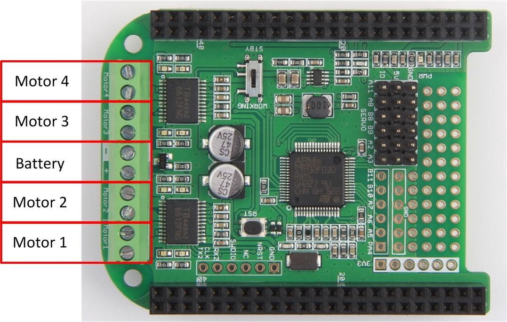

The Motor Bridge Cape features bi-directional motor control using two TB6612FNG integrated dual H-bridge, so it can control two stepper motors or four brushed DC motors with 6 ~15V DC power and about 1A current draw per motor. The cape provides 5V regulated power to BBG or BBB with a max input voltage of 15V. It also has six servo control interfaces and six expand I\O. All the features are provided by the on board STM32F0 coprocessor. The MCU can communicate with BeagleBone by I2C or UART interface.

After this section, I will show you how to use the Motor Bridge Cape on BBG. Before you get started, please download the Motor Bridge Cape Driver library code from the Github.
To use the Motor Bridge Cape Library simply add the MotorBridge.py file to your project. And import the python file to your project, and create a object of the Motor Bridge Cape.
import MotorBridge motor = MotorBridge.MotorBridgeCape()
The Stepper Motor Interface of Motor Bridge Cape just as the picture below shows.
Here is the brief description about the function of stepper motor.
StepperMotorAInit()
StepperMotorAMove(MoveSteps,StepDelayTime)
StepperMotorBInit()
StepperMotorBMove(MoveSteps,StepDelayTime)
Copy the following code to your project and save it as a python file.
import MotorBridge import time def StepperMotorATest(): print 'Hello From MotorBridge' motor.StepperMotorAInit() motor.StepperMotorAMove(1000,1000) # 1000 steppers 1000us every step time.sleep(1) motor.StepperMotorAMove(-1000,1000) #1000 steppers 1000us every step time.sleep(1) def StepperMotorBTest(): print 'Hello From MotorBridge' motor.StepperMotorBInit() motor.StepperMotorBMove(1000,1000) # 1000steppers 1000us every step time.sleep(1) motor.StepperMotorBMove(-1000,1000) # 1000 steppers 1000us every step time.sleep(1) if __name__=="__main__": motor = MotorBridge.MotorBridgeCape() StepperMotorATest() StepperMotorBTest()
The DC Motor Interface of Motor Bridge Cape just as the picture below shows.

Here is the brief description about the functions of DC motor.
DCMotorInit(MotorName,Frequency)
Note:If you change the DC motor frequency, the other DC Motors's frequency will change too.
DCMotorMove(MotorName,Direction,PWMDuty)
motor.DCMotorStop(MotorName)
Copy the following code to your project and save it as a python file.
import MotorBridge import time MotorName = 1 ClockWise = 1 CounterClockWise = 2 PwmDuty = 90 Frequency = 1000 if __name__=="__main__": motor = MotorBridge.MotorBridgeCape() motor.DCMotorInit(MotorName,Frequency) while True: motor.DCMotorMove(MotorName,ClockWise,PwmDuty) time.sleep(2) motor.DCMotorMove(MotorName,CounterClockWise,PwmDuty) time.sleep(2) print "hello" motor.DCMotorStop(MotorName) time.sleep(2)
The Servo Interface of Motor Bridge Cape just as the picture below shows.
Here is the brief description about the functions of Servo.
ServoInit(ServoName,Frequency)
ServoMoveAngle(ServoName,Angle)
Copy the following code to your project and save it as a python file.
import MotorBridge import time ServoName = 2 Frequency = 50 Angle1 = 20 Angle2 = 160 if __name__=="__main__": motor = MotorBridge.MotorBridgeCape() motor.ServoInit(ServoName,Frequency) while True: print 'Servo Test' motor.ServoMoveAngle(ServoName,Angle1) time.sleep(2) motor.ServoMoveAngle(ServoName,Angle2) time.sleep(2)
If there's something wrong with your cape, try to upgrade it. In this section, I will show you how to upgrade the Motor Bridge Cape Firmware using BeagleBone Green, it also works on BBGW and BBB.
1. Insert the Motor Bridge Cape to BBG/BBGW/BBB, and connect BBG to your computer via USB cable.
2. Let your BBG connect to the internet, and access it via SSH as the picture below shows.
3. Download the code from Github by execute following commands
git clone https://github.com/Seeed-Studio/MotorBridgeCapeFirmware
4. Navigate to "MotorBridgeCapeFirmware" and execute "make flash" command to flash the firmware.
cd MotorBridgeCapeFirmware/ && make flash
After a few seconds, you can see "Verification OK" information from the terminal
5. Check if the firmware is flash well by execute following command
i2cdetect -y -r 1
If you find the I2C address 0x4b,it means you have already refreshed the firmware successfully.
Q: I have already update the firmware, but can't detect the i2c address?
A：Be sure that the P9_23 Pin is High, since the P9_23 is connect to Reset pin of STM32, I set the P9_23 pin to high level in the initialization function of MotorBridgeCape class.
Q: When I update the firmware, the error information says that can't find the UART2?
A: You should enable the BB-UART2, since the BBG flash the firmware to Motor Bridge Cape by UART2..
vi /boot/uEnv.txt
Then uncomment "cape_enable=capemgr.enable_partno=BB-UART2". Save and exit the editor, at last reboot your board.
Q: I have already update the firmware successfully and can detect the I2C address, but why I still can't get the cape working?
A: Please mention that there's a working mode switch on the board, be sure the switch is turn to working. If you still have other questions, please come to our forum.